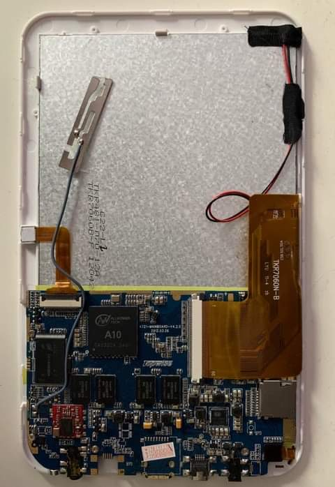

Topwise A721 (topwise-a721)
Jump to navigation
Jump to search
|
 Topwise A721 | |
| Manufacturer | Topwise |
|---|---|
| Name | A721 |
| Codename | topwise-a721 |
| Released | 2012 |
| Category | testing |
| Original software | Android 4.0.1 ICS |
| Hardware | |
| Chipset | Allwinner A10 |
| CPU | ARM Cortex-A8 @ 1Ghz |
| GPU | Mali 400 MP |
| Display | 800x480 |
| Storage | 4 or 8 GB (expandable with up to 32 GB MicroSD) |
| Memory | 512 MB |
| Architecture | armv7 |
{kind=link}
This device is marked as not booting.
Status: -
Status: -
| USB Networking |
Broken
|
|---|---|
| Flashing |
Broken
|
| Touchscreen |
Broken
|
| Display |
Broken
|
| WiFi |
Broken
|
| FDE |
Broken
|
| Mainline |
Broken
|
| Battery |
Broken
|
| 3D Acceleration |
Broken
|
| Audio |
Broken
|
| Bluetooth |
Broken
|
| Camera |
Broken
|
| GPS |
Unavailable
|
| Mobile data |
Unavailable
|
| SMS |
Unavailable
|
| Calls |
Unavailable
|
| USB OTG / USB-C Role switching |
Broken
|
| NFC | |
| Accelerometer |
Broken
|
|---|---|
| Magnetometer | |
| Ambient Light | |
| Proximity | |
| Hall Effect | |
| Barometer | |
| Power Sensor | |
| Camera Flash | |
|---|---|
| Keyboard | |
| Touchpad | |
| USB-A | |
| HDMI/DP | |
| Ir TX | |
| Ir RX | |
| Stylus | |
| Haptics | |
| Ethernet | |
| FOSS bootloader | |
Topwise A721 is motherboard that can be found in multiple devices, including LY-F1, Tracer OVO 1.2 or Gooseberry Single Board Computer. As the device uses Allwinner A10 SOC, it is fully capable of booting from SD Card. Changes allowing it to run Mainline Linux kernel are currently queued for 5.13.
Contents
Contributors
Maintainer(s)
What works
- Nothing
What does not work
- Everything!
To test/do
- Prepare Das U-Boot for the device.
- Try to launch Linux Sunxi or Armbian to have a base.
- Get everything else working.
Installation
Booting
Additional Info
Clock Work Mod
CWM for the device can be found on Shanduur's Google Drive
To install it, firstly get Android Terminal Emulator (you will probably have to install it with adb install) or perform this action directly from adb shell. Those devices are rooted by default.
In the terminal, copy the files from SD-Card (/mnt/extsd) to internal storage (/mnt/sdcard).
Then run following:
$ su
# cd /mnt/sdcard
# sh install-recovery.sh
# sh reboot-recovery.sh
Dev Log
- [2021.05.31] Moved to Linux 5.13-rc4 kernel. Das U-Boot wasn't built yet.
- [2021.02.07] Initial configuration for the device based on the Sunxi Linux 5.9 kernel, including DTS mailpatch. Does not boot.